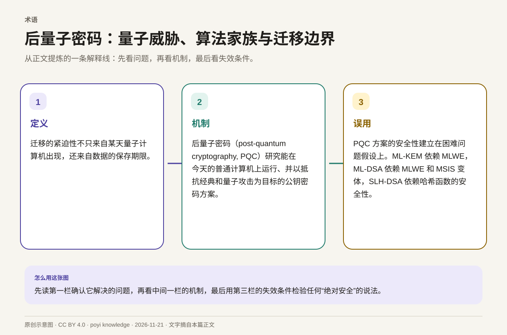

原理与机制
术语：后量子密码（Post-Quantum Cryptography）。后量子密码（post-quantum cryptography, PQC）研究能在今天的普通计算机上运行、并以抵抗经典和量子攻击为目标的公钥密码方案。后量子描述的是对手能力假设，不表示运行时需要量子计算机，也不是利用量子物理传输密钥的量子密钥分发（QKD）。威胁模型的核心是 Shor 算法：在足够大、容错的量子计算机上，它可以在多项式时间内求解整数分解和离散对数，从而攻击 RSA、有限域 Diffie–Hellman/DSA、椭圆曲线 Diffie–Hellman/ECDSA 等依赖这些问题的公钥系统。Grover 算法对无结构搜索给出平方级加速：经典穷举需要约 N 次查询，量子搜索约需 √N 次。它不会像 Shor 那样多项式时间破解公钥问题，但会降低对称密钥穷举的有效安全级别，因此迁移时也要评估 AES 等对称构件的参数。PQC 不是单一算法，而是若干任务和算法家族的集合。最重要的两类任务是：
- 密钥封装机制（KEM）：双方在公开信道上建立一个共享秘密，之后交给对称密码使用。ML-KEM 是 NIST 标准化的 KEM。- 数字签名：生成和验证签名，提供完整性与来源认证，并可支持不可否认性。ML-DSA 和 SLH-DSA 是 NIST 标准化的签名方案。按数学结构，常见家族包括格基（ML-KEM、ML-DSA）、哈希基（SLH-DSA）、编码基（HQC）等。不同家族的安全假设、密钥和签名大小、实现特征不同，不能用一个
量子加密名称混在一起。FIPS 203 说 ML-KEM 的安全性「is related to the computational difficulty of solving certain systems of noisy linear equations, specifically the Module Learning With Errors (MLWE) problem」；FIPS 204 的 ML-DSA 基于 MLWE 和一种 MSIS 变体；FIPS 205 的 SLH-DSA 基于 SPHINCS+ 的无状态哈希签名。NIST 在 2024 年 8 月 13 日发布 FIPS 203、204、205，分别对应 ML-KEM、ML-DSA、SLH-DSA。ML-KEM 规定为 ML-KEM-512、-768、-1024 三个变体，各自声称达到安全类别 1、3、5；它们的公钥、私钥和密文大小不同。ML-DSA 有 ML-DSA-44、65、87；SLH-DSA 有基于 SHA-2 或 SHAKE 的 128/192/256 位参数集，并有小签名与快签名两种取舍。FIPS 203/204 用“believed to be secure”（被认为安全）描述方案；FIPS 205 把安全性建立在 SPHINCS+ 的哈希假设上。三份标准都没有宣称自己已被证明对所有攻击无条件安全。标准给出的是算法、参数、编码和一致性要求；安全性仍建立在困难问题假设、密码分析现状和正确实现之上。

为什么重要
迁移的紧迫性不只来自某天量子计算机出现，还来自数据的保存期限。NIST IR 8547 明确描述“harvest now, decrypt later”（现在收集、以后解密）威胁：对手今天收集加密数据，等量子技术成熟后再解密。长期保密的数据、长期运行的系统和长期信任的根证书，不能等到量子计算机可用时才开始迁移。PQC 也迫使组织重新审视密码敏捷性（crypto agility）：密码算法、参数、协议和证书链需要能够替换，而不是把某个算法硬编码进不可升级的设备。NIST IR 8105 在 2016 年就把密码敏捷性列为迁移的关键挑战。标准已经可以使用，但标准发布不等于所有产品已完成迁移。NIST 明确说这三种标准“can and should be put into use now”，同时 NIST IR 8547（最终版，2026 年 10 月）给出分阶段的弃用和移除时间表。组织需要先盘点密码使用位置，再按风险安排迁移。
应用与实例
KEM 的典型用途是建立会话密钥：TLS、SSH、VPN 和消息协议需要在公开信道上协商共享秘密。PQC 迁移可以把 ML-KEM 与经典密钥交换组合成混合方案：只要其中一个组件仍然安全，会话密钥就不应被完全攻破。混合方案需要明确的密钥派生、协议编码和身份认证，不能只是把两个共享秘密拼接起来。NCCoE 的迁移项目把 TLS、SSH 等协议的互操作与性能作为独立工作流，说明协议层集成不是换一个算法名称就能完成。数字签名用于软件更新、固件、证书、代码签名和文档签名，并可支持不可否认性。ML-DSA-44 的公钥是 1312 字节、签名是 2420 字节；ML-DSA-87 的公钥是 2592 字节、签名是 4627 字节。SLH-DSA 的签名从 7856 字节到 49856 字节不等，但其公钥只有 32、48 或 64 字节。影响证书链、握手和存储开销的主要是较大的签名和 ML-DSA 密钥；SLH-DSA 的小公钥不能抵消其大签名。SLH-DSA 的小签名参数集签名较小但签名慢，快签名参数集签名快但签名更大。选择参数集是工程取舍，不是越大越安全的单一排序。NIST 还在推进其他方案，而它的 PQC 项目页上有两句话必须分开引用。页面说的是：除已写入首批 FIPS 标准的三种算法之外，「the Falcon digital signature algorithm and HQC key encapsulation mechanism were selected for ongoing standardization; that process is underway」。这份页面两次提到备份，一处笼统、一处专指签名：一处说 NIST「is developing additional standards to serve as backups or alternatives」，另一处说的是面向数字签名的后续征集「solicited additional algorithms for digital signature schemes that could serve as a backup to ML-DSA or that could address unique use cases」。页面上没有任何一句把 HQC 说成 ML-KEM 的备份。Falcon/FN-DSA 也被 NIST 列为继续标准化的签名方案，但它不属于本文所依据的三份 2024 年最终 FIPS。把已选择、草案中、已发布三种状态混写，或把第二种读成替补，都会误导迁移计划。QKD 是另一条技术路线：它利用量子物理分发密钥，需要专用设备，且不提供源认证；NSA 表示（该机构论 QKD 与量子密码的页面本轮复查返回 HTTP 403，本地没有留存件，故此句依据 2026-10-24 的阅读记录），在限制条件未克服前不推荐把 QKD 或量子密码用于国家安全系统。PQC 则是在现有平台上用数学困难问题抵抗量子对手。两者不是同义词，也不能互相替代对方的全部功能。
边界与攻击面
PQC 方案的安全性建立在困难问题假设上。ML-KEM 依赖 MLWE，ML-DSA 依赖 MLWE 和 MSIS 变体，SLH-DSA 依赖哈希函数的安全性。FIPS 203/204 使用“believed”而不是proven；FIPS 205 把安全性建立在 SPHINCS+ 的哈希假设上。密码分析可能在未来削弱某个参数集，迁移计划需要保留密码敏捷性和备份方案。即使参数正确，ML-KEM 的解封装仍有极小的失败概率：FIPS 203 表 1 给出约 2⁻¹³⁸·⁸、2⁻¹⁶⁴·⁸、2⁻¹⁷⁴·⁸，分别对应 512、768、1024。它不是零，也不等于可被实际利用，但实现和协议必须按规范处理失败路径。### 实现安全仍是独立问题
FIPS 203 的公告明确说「conformance to this standard does not ensure that a particular implementation is secure」；实现者仍需负责安全设计。侧信道、故障注入、随机数质量、密钥清零、内存访问模式和协议集成都可能失败。标准一致性测试不等于实现认证，更不等于部署安全。### 参数和协议容易出错
ML-KEM 的封装密钥、密文和共享秘密有固定长度；输入检查、解封装失败处理和密钥派生都有规范要求。在满足 K′=K、保密等条件时，FIPS 203 允许把 32 字节共享秘密直接作为对称密钥；若需要进一步派生，应按规范使用 KDF。真正的协议错误包括错误的长度或编码、缺少转录绑定、混合方案缺少域分离和降级保护；不能把直接使用共享秘密本身当作错误。混合方案还要处理两个共享秘密的组合顺序、域分离和降级攻击。### 签名和密钥更大
ML-DSA-44 的公钥是 1312 字节、签名是 2420 字节；ML-DSA-87 的公钥是 2592 字节、签名是 4627 字节。SLH-DSA 的签名从 7856 字节到 49856 字节不等，但其公钥只有 32、48 或 64 字节。影响证书、握手、固件分区和带宽的主要是较大的签名和 ML-DSA 的密钥；SLH-DSA 的小公钥并不能抵消其大签名。不能只看 CPU 速度而忽略体积和协议上限。### 量子时间表不确定
NIST 把 cryptanalytically relevant quantum computer 的出现（出现具有密码分析相关能力的量子计算机）描述为「years or decades away」（可能还需要数年或数十年），对这件事本身没给日期；它给出的是迁移时间表——同一页面写明，按 NIST IR 8547 的过渡时间表，易受量子攻击的算法要在 2035 年前逐步退出其标准，风险最高的系统更早。迁移计划不能建立在某个 guaranteed 的年份上，也不能因为今年没有量子计算机就推迟长期数据的保护。风险管理的做法是识别长期秘密、评估迁移成本，并尽早开始。Grover 给出平方级加速，但这并不意味着 AES-256 完全失效。它降低的是无结构搜索的指数；实际影响还取决于量子内存、并行化、电路深度和攻击模型。本文不给出 AES-128 只剩 64 位、必须换成 AES-256 这类简单口号，而是把它作为评估对称参数的一个因素，并参考 NIST 的安全类别框架。### QKD 的局限
QKD 需要专用光纤或自由空间设备，不能作为软件部署在现有网络上；它不提供源认证，需要经典认证或预置密钥；可信中继、拒绝服务、设备实现和验证成本都是现实问题。NSA 的立场是限制条件未克服前不推荐把这些技术用于国家安全系统（同一份页面未留存，依据 2026-10-24 的阅读记录），这不是对所有实验的否定，而是对部署主张的限定。
历史与背景
1994 年，Peter Shor 发表「Polynomial-Time Algorithms for Prime Factorization and Discrete Logarithms on a Quantum Computer」，给出量子计算机上的多项式时间算法；1996 年，Lov Grover 提出无结构搜索的平方级加速算法。这两项结果奠定了量子威胁和后量子密码的问题框架。2016 年，NIST 启动后量子密码标准化征集。经过多轮评估，NIST 在 2022 年宣布首批选定算法，并在 2024 年 8 月 13 日发布 FIPS 203、204、205。2025 年 3 月 11 日的 CSRC 新闻标题是「HQC Announced as a 4th Round Selection」，正文说第四轮评估之后「NIST has selected HQC for standardization」，并且「HQC will be the second PQC key-encapsulation mechanism (KEM), following ML-KEM」——文件写的是 KEM 的先后，没有写 HQC 替 ML-KEM 兜底。同一份公告还补了一句「NIST will draft a standard for HQC and release it for public comment」，并称「the final version will be published in approximately two years」——这正是本节要提醒区分的已选定与草案中。Falcon/FN-DSA 仍在持续标准化过程中。NIST IR 8547（最终版，2026 年 10 月）描述向 PQC 过渡的时间表，引用 NSM-10 的 2035 年目标，并对量子易受攻击的算法给出弃用和移除阶段：其过渡表把 112 位 ECDSA 列为 2030 年后弃用、2035 年后禁用，128 位及以上列为 2035 年后禁用。这些日期和状态以 2026-10-24 查阅的 NIST 页面为准。FIPS 203 和 FIPS 204 的发布页面还带有勘误/潜在更新说明；正式实现和迁移应以官方当前文本为准，不能把本文当作标准替代品。
逐步示例与核验
FIPS 203 的 ML-KEM 参数为 n=256、q=3329，三个参数集为：
| 参数集 | k | η1 | η2 | du | dv | 公钥字节 | 私钥字节 | 密文字节 | 共享秘密 |
|---|---|---|---|---|---|---|---|---|---|
| ML-KEM-512 | 2 | 3 | 2 | 10 | 4 | 800 | 1632 | 768 | 32 |
| ML-KEM-768 | 3 | 2 | 2 | 10 | 4 | 1184 | 2400 | 1088 | 32 |
| ML-KEM-1024 | 4 | 2 | 2 | 11 | 5 | 1568 | 3168 | 1568 | 32 |
FIPS 203 使用“encapsulation key”（封装密钥）和“decapsulation key”（解封装密钥）；本表为行文方便简称公钥和私钥，二者不是任意可互换的 RSA 式密钥对。这些大小不是任意列表，而可从编码公式复算：封装密钥为 384k+32 字节，解封装密钥为 768k+96 字节，密文为 32(du·k+dv) 字节。以 ML-KEM-768 为例：384·3+32=1184，768·3+96=2400，32·(10·3+4)=1088。共享秘密固定为 32 字节。验证程序对三个参数集逐一计算并与 FIPS 203 的表 3 比较。### 一个玩具 LWE 例子
下面的例子只演示带误差学习的解密恒等式，不是 ML-KEM，也不能用于真实密钥。取 q=97、n=4，秘密向量 s=(1,0,2,3)，固定矩阵 A，误差 e=(1,−1,0,1)，加密随机向量 r=(1,0,1,1)。加密一个比特 m 时，计算 u=Aᵀr、v=b·r+m·48 mod 97，其中 b=A·s+e。解密计算 v−s·u，得到 e·r+m·48；本例 e·r=2。当 m=0 时，解密值为 2，靠近 0；当 m=1 时，解密值为 50，靠近 48。因此可以把结果判为 0 或 1。这个玩具例子说明噪声 + 舍入的基本思想，但不说明 ML-KEM 的安全性或参数规模；真实 ML-KEM 使用模 3329 的多项式环、NTT、压缩编码和 Fujisaki–Okamoto 变换。### Shor 归约的经典演示
Shor 算法的经典部分可以这样演示：选一个与 N 互素的 a，求 a 模 N 的阶 r；若 r 为偶数，计算 gcd(a^(r/2)±1, N)，可能得到 N 的非平凡因子。本文用经典穷举求阶，分别对 N=15、21、35 得到因子 (3,5)、(3,7)、(5,7)。这不是量子模拟，也不展示量子加速；它只验证阶→因子的数学归约，帮助读者理解 Shor 算法在做什么。### Grover 的平方根关系
Grover 的查询复杂度约为 √N。对 2¹²⁸ 个候选，平方根是 2⁶⁴；对 2¹⁹² 是 2⁹⁶；对 2²⁵⁶ 是 2¹²⁸。验证程序用整数幂检查 (2⁶⁴)²=2¹²⁸ 等恒等式。这是算术关系，不是量子电路模拟，也不代表实际攻击成本；量子内存、并行化和电路深度都会改变工程评估。
参考出处
- Wikipedia search entry for 后量子密码. https://zh.wikipedia.org/w/index.php?search=%E5%90%8E%E9%87%8F%E5%AD%90%E5%AF%86%E7%A0%81
- RFC 4949: Internet Security Glossary, Version 2. https://www.rfc-editor.org/rfc/rfc4949